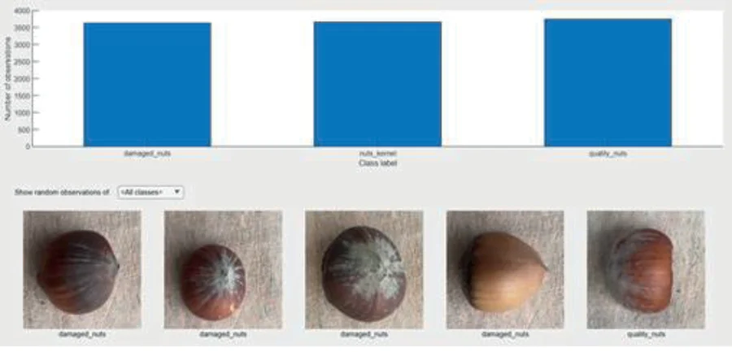
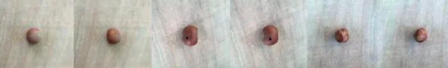
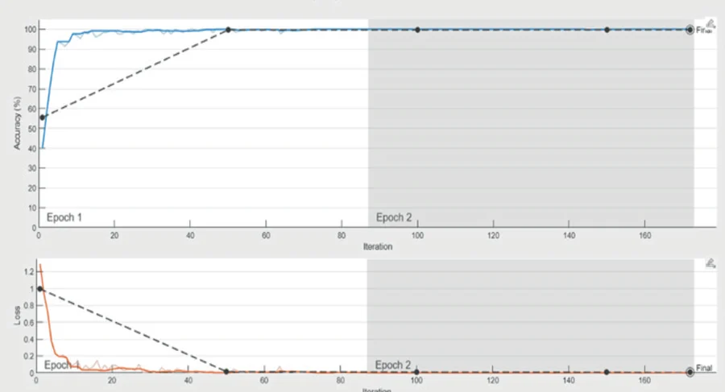

Paper (PDF) · Use ← → or Space to navigate, F for full screen
Summary
At a Glance
The same lightweight network, ShuffleNet, is trained three times on hazelnut photos with three optimizers: SGDM, ADAM and RMSprop. Which training setting classifies best?
Best test accuracy99.96%ShuffleNet + ADAM
Misclassified4of 11,039 images (ADAM)
Images15,7701,577 hazelnuts × 10 views
Classes3good · bad · inner
SGDM
99.94% test accuracy, 7 errors.
ADAM
99.96% test accuracy, 4 errors: the recommended setting.
RMSprop
99.92% test accuracy, 9 errors.
Introduction
Why Sort Hazelnuts Automatically?
Before storage, hazelnuts are cleaned and bad nuts and inner nuts (kernels without shell) must be removed.
Bad nuts left in the lot lower the yield (randıman); inner nuts left in storage can spoil.
AI can classify nuts from images by quality, size and colour, faster and more consistently than manual sorting.
On a sorting line the model must run on modest hardware, which motivates a lightweight network.
Research question
For ShuffleNet on this task, which optimizer gives the best accuracy?
Wider uses of AI in hazelnut farming
Early disease detection, yield analysis, automated harvesting and processing.
Introduction · Related Work · Interactive
Earlier Hazelnut Classifiers
Results as reported by each study; tasks and data differ. Click a column header to sort.
Study
Input
Task
Method
Reported result
Khosa and Pasero, 2014
X-ray images
good vs damaged or infected
feature extraction, anomaly detection
748 healthy, 20 damaged, 20 infected samples
Solak and Altınışık, 2018
photos of 25 nuts
small, medium, large
OpenCV, Weka, K-means
90–100% agreement
Koç et al., 2020
photos, in shell
3 cultivars
random forest (bagging) / DL4J
83% / 71% accuracy
This study
photos, 15,770 images
good, bad, inner
ShuffleNet with 3 optimizers
up to 99.96% test accuracy
Materials and Method · Dataset · Fig. 1
The Hazelnut Dataset


Fig. 1: class counts and sample images (dataset by Güneş, 2022)
Rear phone camera, 12 MP; photos at 3024×3024 on a platform, one nut per image.
10 photos per nut from different angles: 15,770 images.
Cropped to 1000×1000, then resized to 224×224.
Materials and Method · ShuffleNet · Interactive
ShuffleNet: Cheap Convolutions That Still Mix
Groups
Channels / group
Pointwise group convolution: 1×1 convolutions split into groups, cutting computation.
Channel shuffle after the first 1×1 group convolution lets groups exchange information.
Depthwise 3×3 convolution; with stride 2, a 3×3 average-pooled shortcut and concatenation instead of addition.
Diagram of the shuffle operation (Zhang et al., 2018), not the trained network.
Study and Findings · Optimizers · Interactive
Optimizer Lab: SGDM, ADAM, RMSprop
Learning rate
Steps
SGDMADAMRMSprop
SGDM: vt = β vt−1 + (1 − β) ∇L(θt), θt+1 = θt − α vt, β ≈ 0.9. ADAM: per-parameter steps from the mean and variance of the gradients. RMSprop: divides by a running average of squared gradients with a forgetting factor.
A toy two-dimensional loss surface, not the hazelnut network.
Study and Findings · Figs. 2–4 · Interactive
Training Runs in MATLAB

MATLAB, data shuffled, split stated as 30% training and 70% test.
Training panels (ADAM, RMSprop): 2 epochs, 172 iterations, constant learning rate 0.001, single CPU, about 55 minutes.
Accuracy passes 95% within the first epoch.
Study and Findings · Results
Accuracy and Errors per Optimizer
Lighter bars: training accuracy; darker bars: test accuracy. Red dots: misclassified images in each confusion matrix (11,039 images). The axis starts at 99.7%.
All three settings exceed 99.9% on test data; ADAM leads with 4 errors, against 7 for SGDM and 9 for RMSprop.
Study and Findings · Figs. 5–7 · Interactive
Confusion Matrix Explorer
Counts from the paper's matrices; metrics on this slide are computed from them for the chosen class against the other two.
Conclusions and Recommendations
Conclusion
ShuffleNet sorts hazelnuts into good, bad and inner nuts with more than 99.9% test accuracy with every optimizer.
The results are close, but ADAM performs best: 99.96% test accuracy, 4 errors, the highest reported specificity (1) and F1 (0.9998).
Most remaining errors are between inner and good nuts.
A lightweight network with the right optimizer is a practical basis for automatic cleaning before storage.
Conclusions
Check Questions
Why must bad and inner hazelnuts be removed before storage?
What problem does the channel shuffle solve in a group convolution?
How does ADAM differ from SGDM in choosing a step size?
How many test images did each optimizer misclassify?
With 10 photos of each nut and a random image split, what could inflate the test accuracy?
Show answers
Bad nuts lower the yield; inner nuts can spoil during storage.
Without it each group only sees its own channels; the shuffle passes information between groups.
SGDM uses one learning rate with momentum; ADAM adapts a separate step per parameter from gradient mean and variance.
SGDM 7, ADAM 4, RMSprop 9 out of 11,039.
Views of the same nut can fall into both training and test sets, so the test set is not fully independent.
References
Selected References
Zhang, X., Zhou, X., Lin, M., Sun, J. (2018). ShuffleNet: An extremely efficient convolutional neural network for mobile devices. CVPR, 6848–6856.
Güneş, E. (2022). Hazelnuts. Mendeley Data, V2. doi:10.17632/dvvx6kst3f.2
Koç, C. et al. (2020). Classification of hazelnut cultivars: comparison of DL4J and ensemble learning algorithms. Not. Bot. Horti Agrobot. Cluj-Napoca, 48(4), 2316–2327.
Solak, S., Altınışık, U. (2018). Detection and classification of hazelnut fruit by using image processing techniques and clustering methods. Sakarya Univ. J. Sci., 22(1), 56–65.
Khosa, I., Pasero, E. (2014). Feature extraction in X-ray images for hazelnuts classification. IJCNN, 2354–2360.
See the full paper for the complete reference list. Figures on these slides are from the paper.
Thank You
Selection of the Most Suitable Parameters for Classification of Hazelnut Fruit Using ShuffleNet
How to cite: Tomak, Ö., Dikbaş, M. C., & Külcü, S. (2025). Selection of the Most Suitable Parameters for Classification of Hazelnut Fruit Using ShuffleNet Deep Learning Algorithm. In 11th International Azerbaijan Congress on Life, Engineering, Mathematical, and Applied Sciences, Congress Proceedings Book, Vol. I, pp. 64–73. BZT Turan Publishing House.